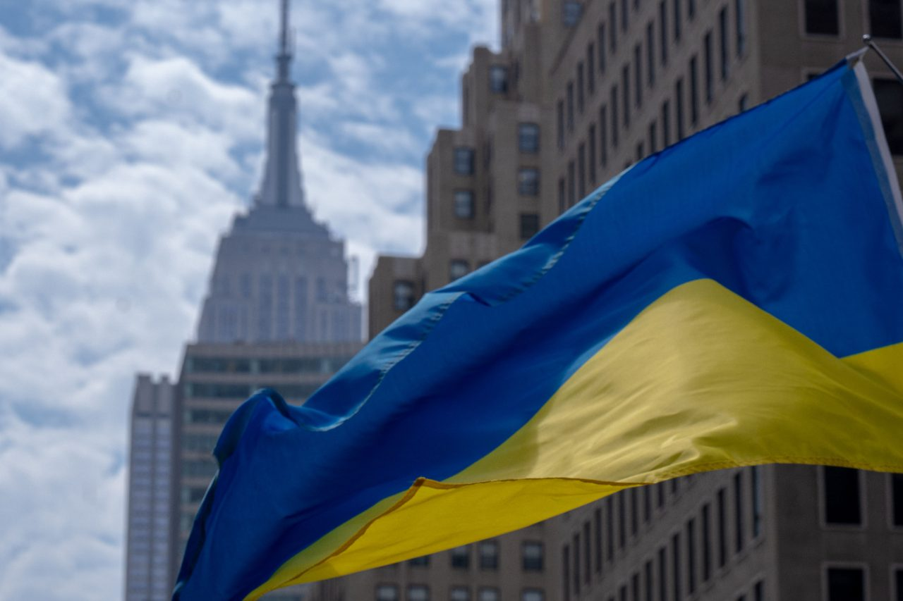

TRUMP’TAN KRİTİK UKRAYNA ÇIKIŞI: PUTİN VE ZELENSKİY ÇOK YAKINDA BİR ARAYA GELECEK
ABD Başkanı Donald Trump, Rusya-Ukrayna savaşını sonlandırmaya yönelik yürütülen diplomatik çabalarda dönüm noktası niteliğinde olabilecek bir duyuruda bulundu. Trump, Rusya Devlet Başkanı Vladimir Putin ile Ukrayna Devlet Başkanı Volodimir Zelenskiy'nin katılımıyla çok yakında bir zirve düzenleneceğini açıkladı.

Özel uçağında Dışişleri Bakanı Marco Rubio ve Ukrayna özel temsilcisi Steve Witkoff ile bir araya gelerek kapsamlı değerlendirmeler yaptıklarını belirten ABD Başkanı, Washington yönetiminin arabuluculuğunda Moskova-Kiev hattında kayda değer bir ivme yakalandığını vurguladı.
Diplomasi Trafiği Hız Kazandı
Son dönemde artan diplomatik temaslar, tarafların uzun süredir mesafeli durduğu doğrudan müzakere masası ihtimalini yeniden güçlendirdi. Kremlin cephesinden gelen sinyaller de bu süreci destekler nitelikte. Daha önce Rusya Dış Politika Danışmanı Yuriy Uşakov, ABD'li özel temsilci Steve Witkoff ile St. Petersburg’da yapılan kapsamlı görüşmelerin ardından, kasım ayı ortalarında üçlü müzakerelere yeniden dönmeye hazır olduklarını duyurmuştu.
Avrupalı liderlerin ve arabulucuların yürüttüğü mekik diplomasisinin ardından gelen bu yeni zirve haberi, uluslararası kamuoyunda savaşın diplomatik yollarla çözümü adına en somut umut ışıklarından biri olarak değerlendiriliyor.
Zaman ve Yer Henüz Netleşmedi
ABD Başkanı Trump, Putin ve Zelenskiy’yi buluşturacak olan bu kritik zirvenin tarihi, yeri ve uygulanacak formatı hakkında henüz detay paylaşmadı. Ancak barış müzakerelerinde sağlandığı belirtilen ilerlemelerin, liderlerin yakın zamanda aynı masada oturmasını tetikleyen en büyük etken olduğu ifade ediliyor. Gözler şimdi Washington, Moskova ve Kiev'den yapılacak olası ortak veya resmi açıklamalara çevrilmiş durumda.